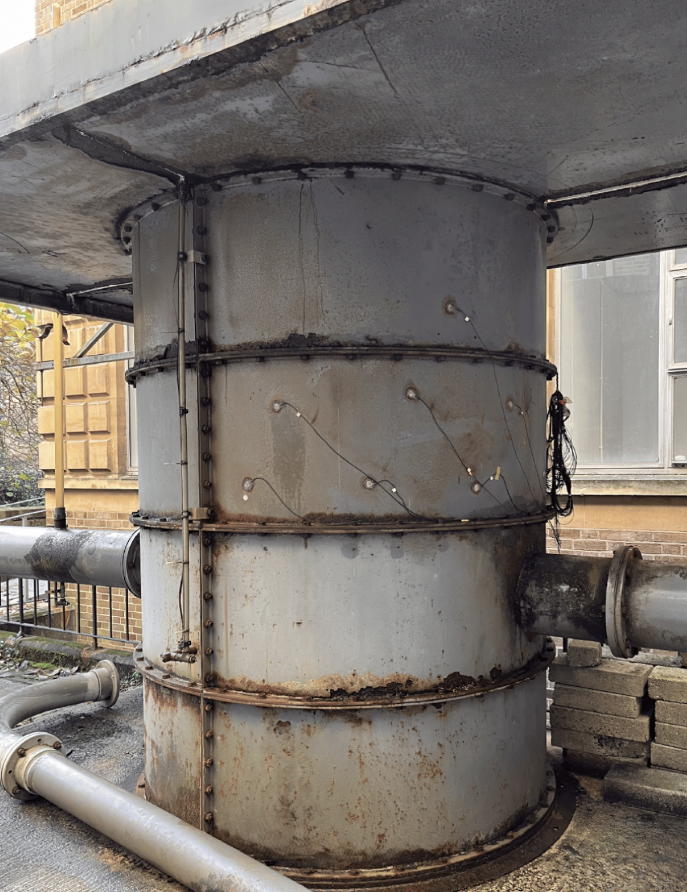
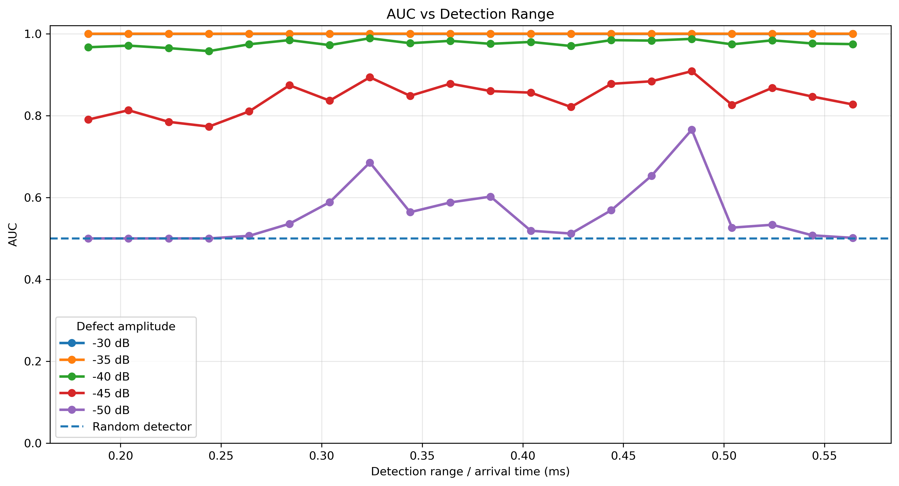
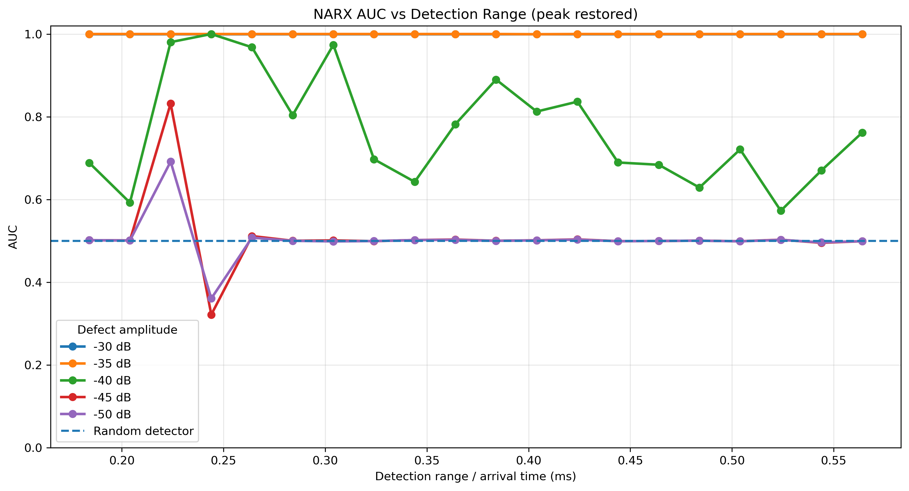

Research · Python / PyTorch
Deep learning for structural health monitoring
Detecting subtle changes in ultrasonic signals while accounting for variation in environmental and operating conditions.
Undergraduate project and summer research · 2026

Project overview
Guided-wave signals change with both structural condition and the environment. I developed an LSTM model trained on healthy ultrasonic data, using deviations from predicted healthy responses to identify synthetic defect signals. Healthy-only training avoids requiring damaged examples during model training.
My contribution
I led a five-person undergraduate team, organising meetings, coordinating milestones and integrating individual contributions. I personally developed the LSTM model in Python/PyTorch, then independently extended the research over summer and benchmarked it against a multistep NARX baseline from the published literature.
Engineering approach
- Train on healthy data to learn normal signal behaviour before evaluating synthetic defects.
- Compare models across defect amplitudes and arrival times, rather than relying on a single favourable condition.
- Use ROC-AUC to assess how effectively anomaly scores distinguish healthy and defective signals.
Results and scope
At −40 dB, mean ROC-AUC was 0.991 for the LSTM and 0.744 for NARX. At −45 dB, it was 0.814 versus 0.511. Both models reached 1.000 at −30 dB and −35 dB in the reported evaluation.
| Defect amplitude | NARX mean AUC | LSTM mean AUC |
|---|---|---|
| −30 dB | 1.000 | 1.000 |
| −35 dB | 1.000 | 1.000 |
| −40 dB | 0.744 | 0.991 |
| −45 dB | 0.511 | 0.814 |
Results are for synthetic defect signals across the evaluated arrival times. ROC-AUC measures discrimination, not percentage accuracy. These results do not establish performance on every physical defect or operating condition.
Project figures




Reports
This report documents the original team project comparing LSTM, CNN and optimal baseline subtraction. The NARX comparison shown above comes from the subsequent summer extension and is not presented as a result from this report.